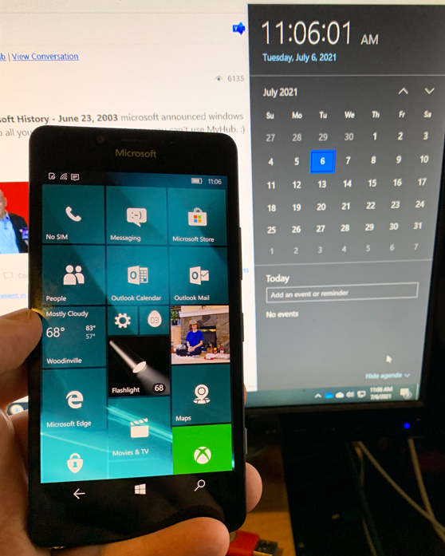

Windows Phone - Lessons Learned
This is my “developer” perspective on why Windows Phone failed in the marketplace.

To understand the failure, you first have to go back to the phenomenal success of iPhone. Remember before iPhone there was, way back as far as 2000, palm pilots, and the Windows CE powered Compaq iPAQ and there were flip phones and everyone knew these were going to merge. Apple had also worked for a decade on their Apple Newton as far back as 1995. I was on an internal task force in 2003 that recommended we merge phones and handheld devices as soon as possible but failed to convince the VP of Microsoft mobile at the time. He was focused on “slate” devices instead and we all know who was talking about slates back then.
While Microsoft could have beaten Apple to market, they decided to do nothing. Microsoft was very distracted with the big security push and the DOJ at the time. This gave Apple the time they needed to perfect their iPhone and stun the market in 2007 with a gorgeous premium device that every tech geek just had to have. Notice the first iPhone had no app store, so it was not all about apps back then, it was about the best possible “experience”, and this could not have happened without a deal with AT&T. Did Steve Jobs know that a killer phone would create demand from developers? Their next release they opened up an SDK and off to the races on apps. They kept a high bar on their apps too which was in line with their premium brand.
In the meantime, Google took the low road and shipped a free operating system, Android, also unveiled in November 2007, clearly Google was working on this long before. Now remember that iOS is based on the XNU kernel of Darwin which is a Unix-like operating system. This meant iOS apps could use all kinds of open-source Linux friendly libraries for computer vision, encryption, https, etc. Android is also built on a Linux Kernel and so Android developers found it very easy to port their apps over from iOS. This allowed Google to amass millions of apps almost overnight. Android was also hugely helped by the partnership with Samsung who consistently shipped the best tech specs for each new phone they came out with. So again, success cemented by key partnerships.
Then late to the party along comes Windows Phone 7 an entirely 3 years later in 2010, wow talk about late to the party. Microsoft chose Nokia as a partner and Nokia phones used Qualcomm chipsets. This phone provided only a .NET SDK, so none of the C++ open-source libraries from iOS or Android apps could be leveraged. Apps had to be built from scratch. I claim all the app developers could have chosen to do this and would have gotten lots of apps up and running in a few months, but most chose not to. Why? Because after Microsoft cancelled Zune & Kin, developers didn’t believe Microsoft had a winning strategy, and the SDK was not rich enough to build interesting apps anyway and with no shared code across the 3 phone platforms, Windows usually drew the short straw.
Along came Windows Phone 8 in 2012 with a C++ SDK, but the Kernel was Windows based, and therefore again, all those Linux friendly open-source libraries used in iOS and Android apps could not be easily ported to Windows Phone. Microsoft recognized this problem and tried to create their own open source libraries, but it was too little too late. Also, UWP was not Win32 so folks couldn’t even use established Win32 code either. Microsoft should have followed Android and started off with a Linux compatible phone, but back then Ballmer was very anti-Linux, and that is where Microsoft really shot themselves in the foot on the technical side.
Apple had taken the high road, Google took the low road, which was traditionally Microsoft’s strong position with the open PC industry, where anyone can build a PC and apps for it. So, there was no room for Microsoft. Oddly, Microsoft tried to copy Apple but could never deliver the same premium quality. Nokia turned out could not compete with Samsung on phone specs, and Qualcomm really screwed Microsoft with very bad windows drivers, full of bugs, and little to no support, so the phones would hang and freeze and with 3 companies in the picture all pointing fingers at each other - it was a real mess. So, Microsoft was stuck in the middle between Apple and Android, squeezed on both ends and with serious quality problems. It was really a huge business mistake to try and copy Apple. A free OS to compete with Android that was able to fully leverage the huge Win32 app platform, with C++ support from day one would have attracted better phone makers, and many more app developers. If the kernel was also Linux-based then developers could share app code across the 3 platforms and have a more manageable story for building, testing and shipping their apps on the 3 app stores. Microsoft could have acquired 3rd party libraries that emulate Win32 on Linux to enable easy porting of Win32 libraries so app developers could leverage the huge Windows legacy. This would have been a big job but if they started in 2003 they would have had time to do it right.
So, what killed Windows Phone?
- Lack of vision to invest early back in 2003-2005.
- Then trying to copy Apple after they launched iPhone.
- Choosing to partner with Nokia and failing to partner Samsung.
- Choosing a source code incompatible Kernel (could not just recompile apps).
- Betting on .NET with no C++ story in the first release.
- UWP cutting off the huge legacy of Win32 apps.
- “Windows” was not a good brand name to use in a Phone.
In other words a spectacular string of business and technical mistakes which should make a great case study for business schools.
To highlight the lack of vision - I have a sneaking suspicion that Steve Jobs had a brilliant all up strategy where iPhone was only part of the overall vision. Starting with the most personal of devices, like iPods then iPhones, then building on the really strong personal attach these devices have, leverage that to create pull up into tablets, laptops and media centers. This has pulled Apple laptops from negligible numbers up into a respectable 9.5% of total laptops sold in 2017. Of both desktops + laptops, Apple had 12% of the global market share in 2018. That’s a LOT of laptops. So if it was Steve Jobs’ strategy to make macOS relevant by putting a phone in everyone’s pocket, then it was a brilliant strategy that is clearly working. Did Steve Jobs really envision all this? If so, Microsoft really needs to step up their game in the vision and strategy department.